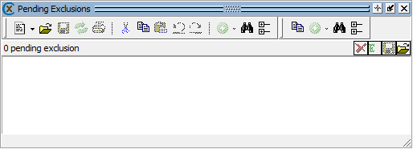
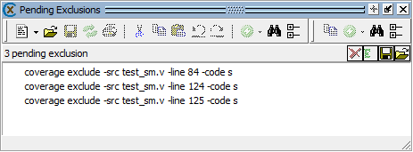
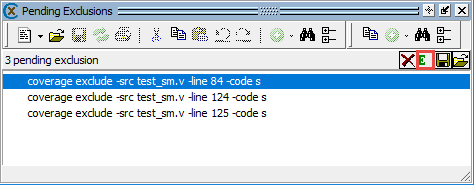

Enable
two-step exclusions to avoid GUI lag when adding many exclusions
individually. The two-step exclusions mode postpones the application
of exclusions until you manually execute them.
Procedure
- Enable two-step exclusions at the vsim command
prompt or with the GUI menu bar:
This opens the Pending Exclusions
window.
- Add any
desired exclusions.
- (Optional) Save pending exclusions.
Save the list
of pending exclusions with the menu item in the Pending
Exclusions window.
This action saves all listed exclusion commands
to the file, regardless of which are selected.
- Execute pending exclusions.
Execute the full list from the Pending Exclusions
window. Select .
Execute a partial selection of the pending
exclusions list. Select the specific exclusion commands from the
pending list with the mouse, then select .
Examples
This example illustrates the basic flow for enabling
two-step exclusions and applying a pending exclusion.
Enable two-step exclusions by selecting .
The Pending Exclusions window appears, but is empty.
Figure 1. Empty
Pending Exclusions Window
Add some exclusions using the vsim command
prompt.
coverage exclude -src test_sm -line 84 -code s
coverage exclude -src test_sm -line 124 -code s
coverage exclude -src test_sm -line 125 -code s
The window is now populated with exclusion
commands. Note that the commands listed are the exact same as those
entered at the application command prompt.
Figure 2. Populated
Pending Exclusions Window
Select an exclusion with the mouse, the green Execute
Selected Exclusions button is now active.
Figure 3. Selecting a Pending Exclusion
Click the Execute
Selected Exclusions button to apply the selected exclusion.